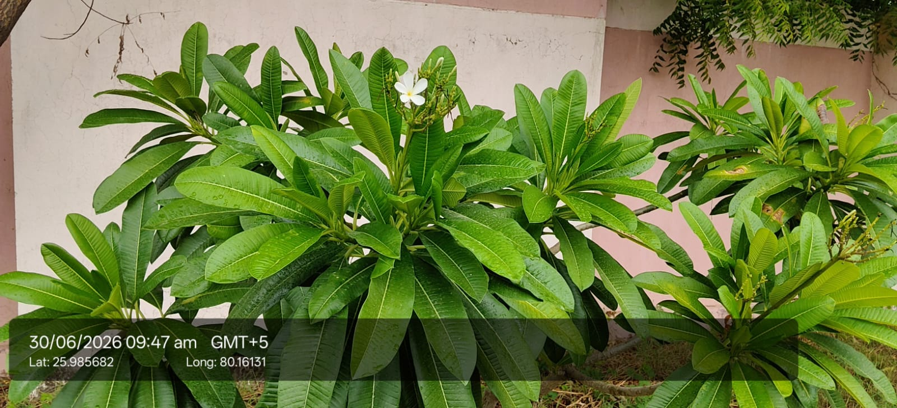

| Scientific name | Plumeria rubra or Plumeria obtusa |
|---|---|
| Type | Deciduous succulent shrub or small tree |
| Category | Shrubs |
Habitat & Growing Conditions
- Native to Mexico, Central America, and the Caribbean. Widely planted across India as an ornamental, very common in UP including the Kanpur region in your coordinates
- Thrives in hot, dry to moderately humid tropical and subtropical climate. Loves 25-40°C heat. Tolerates UP summers well
- Prefers full sun for best flowering. Grows poorly in shade
- Needs well-drained sandy or loamy soil. Extremely drought-tolerant. Rots quickly in waterlogged soil
- Planted in home gardens, parks, temples, roadside avenues, and cemeteries. Doesn’t grow wild in North India - always cultivated
- Deciduous - sheds most leaves in winter, Jan-Feb in UP. New leaves and flowers flush with summer heat
Ecological & Economic Importance
- Ornamental: Primary use. Grown for its highly fragrant, waxy flowers in white, yellow, pink, or red. Major landscaping plant in India. Blooms April-October
- Religious & cultural: Flowers offered in temples and used in garlands. Considered sacred in Hindu and Buddhist traditions. Planted in temples and cremation grounds
- Perfumery: Flowers yield frangipani essential oil used in high-end perfumes, soaps, and cosmetics. “Frangipani” scent is famous worldwide
- Medicinal: In folk medicine, bark and latex used for skin diseases, rheumatism, and as purgative. Flowers used for fever. Note: Latex is irritant and toxic if ingested. Consult a healthcare professional before any medicinal use
- Environmental: Drought-hardy, low-maintenance tree for urban greening. Provides light shade
- Other uses: Light wood used for small carvings. Latex used as insect deterrent in some regions